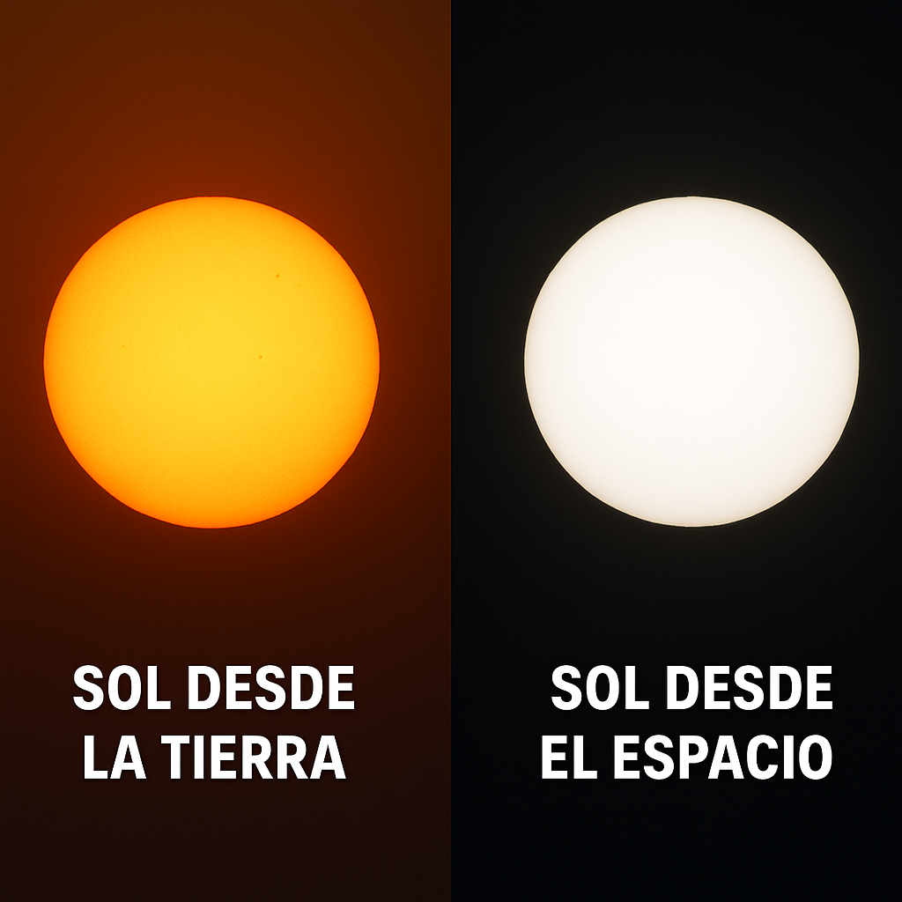
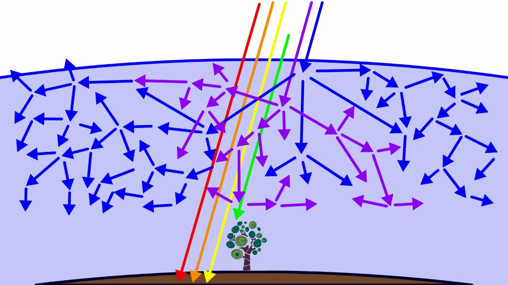
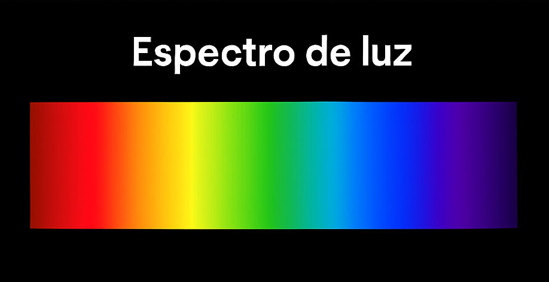
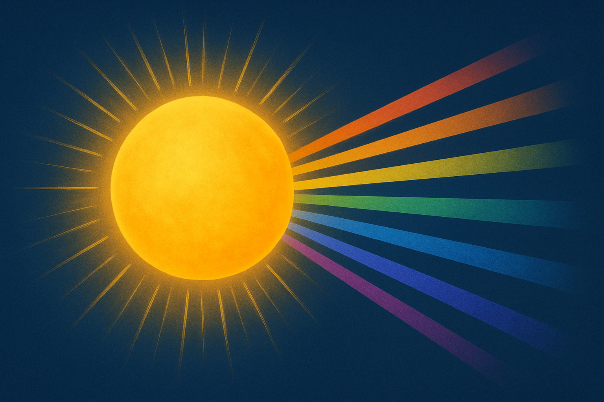

¿Por qué el Sol es blanco y no amarillo?
Desde la Tierra solemos ver el Sol como amarillo o anaranjado. Sin embargo, si lo observamos desde el espacio, su color es blanco. Esto se debe a que el Sol emite luz en todos los colores del espectro visible. Cuando estos colores se combinan, forman la luz blanca.
La dispersión de la luz en la atmósfera
La luz solar interactúa con las partículas en la atmósfera terrestre en un fenómeno conocido como dispersión de Rayleigh. Los colores de onda más corta, como el azul y el violeta, se dispersan más, dejando pasar los tonos cálidos como el amarillo y el rojo. Esta misma dispersión es la razón por la que vemos el cielo azul. Aunque el violeta también se dispersa, nuestros ojos son más sensibles al azul, y además parte de la luz violeta es absorbida por la capa superior de la atmósfera. Por eso, durante el día, el cielo nos parece azul.
El Espectro Solar Completo
El Sol emite un espectro continuo de colores. Al analizarlo científicamente, se comprueba que incluye todos los colores del arcoíris, lo que confirma su color blanco.
El efecto de la atmósfera
Durante el amanecer o atardecer, la luz solar atraviesa una mayor porción de atmósfera. Esto aumenta la dispersión de los colores de onda corta, haciendo más visibles los tonos cálidos. Lo que llega a nuestros ojos son principalmente los colores de onda larga como el rojo, anaranjado y amarillo. Es por eso que el Sol parece tener esos tonos, aunque no son su color real.
